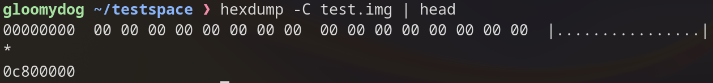
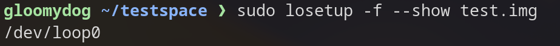
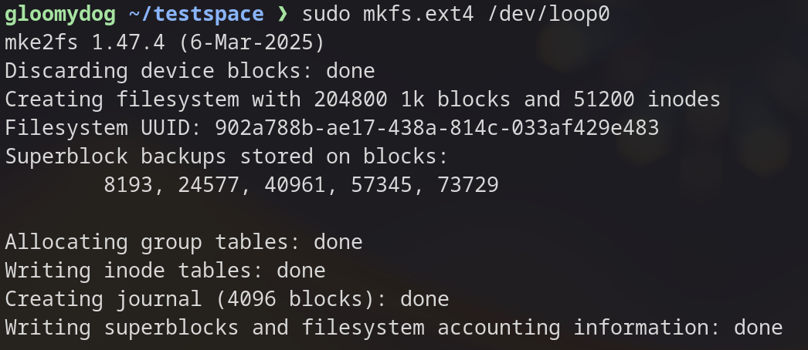
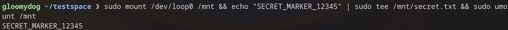
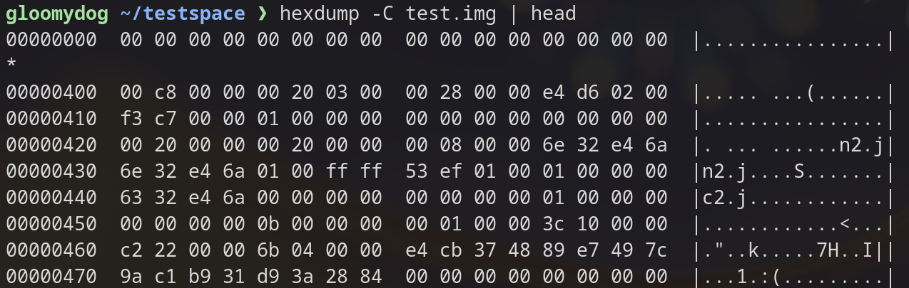
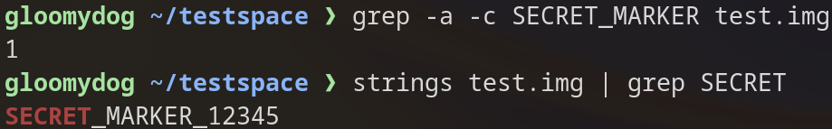
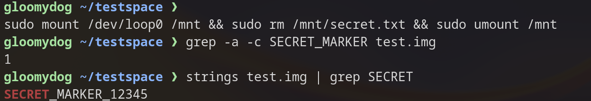
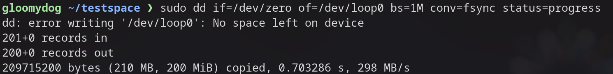
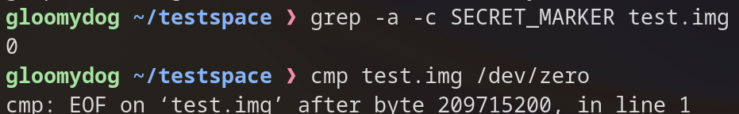
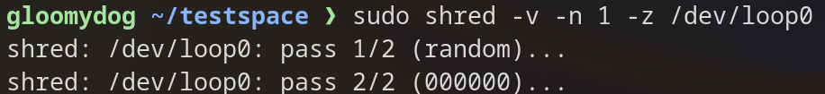

Completely Erasing Data on Linux
If you use Linux for long enough, you will run into the infamous sudo rm -rf / meme, which wipes out every file on the system. However, rm does not actually erase data. It only removes the reference to the file in the filesystem, and the data blocks stay on the disk until they are overwritten. Forensic tools can often recover them.
This article presents how to erase data properly with shred and dd, and verifies the result with a harmless experiment using a disk image file.
“Erasing completely” means overwriting every part of the storage with zeros or random data so the original content can no longer be read.
These methods are effective for HDDs and USB flash drives, but not reliable for SSDs.
Preparation for img file
All commands below operate on a file, not your real disk.
1. Make a void file
test.img is a 200 MB sparse file. It is treated as all zeros and takes almost no real disk space.
truncate -s 200M test.imgYou can check it with hexdump.

2. Turn the file into a block device
This makes the test.img file appear as a block device (/dev/loop0), so Linux treats it like a real disk.
sudo losetup -f --show test.img
3. Create an ext4 filesystem
This writes the management structures to the disk.
sudo mkfs.ext4 /dev/loop0
4. Write a marker file
I write a recognizable string, SECRET_MARKER_12345, so I can later check whether it remains in the image. A disk must be mounted before Linux can read or write files on it. mount attaches the disk to a directory (here /mnt), and umount detaches it and flushes pending writes.
sudo mount /dev/loop0 /mnt && echo "SECRET_MARKER_12345" | sudo tee /mnt/secret.txt && sudo umount /mnt
You can also check with hexdump. test.img now contains some data.

5. Check that the marker is in the image
Expected output is 1 or more. -a treats binary data as text, and -c prints the number of matching lines.
grep -a -c SECRET_MARKER test.img
Method 1: rm (data is not erased)
rm deletes the file from the filesystem's point of view, but not the data itself.
sudo mount /dev/loop0 /mnt && sudo rm /mnt/secret.txt && sudo umount /mntCheck again:
grep -a -c SECRET_MARKER test.imgExpected output is 1. You can also see the string directly with:
strings test.img | grep SECRET
Method 2: dd (overwrite the whole device with zeros)
This reads zeros from /dev/zero and writes them over the entire /dev/loop0. conv=fsync means flush everything to disk before finishing.
sudo dd if=/dev/zero of=/dev/loop0 bs=1M conv=fsync status=progress
Check again:
grep -a -c SECRET_MARKER test.imgExpected output is 0.
To verify that every byte is zero, compare the image against /dev/zero. Expected output is cmp: EOF on test.img after byte 209715200. It reaches the end of test.img without finding any difference. If any non-zero byte exists, cmp reports its position instead.
cmp test.img /dev/zero
After this step the filesystem is gone, so you must redo the preparation steps (1–4) before trying Method 3. If test.img and the loop device still exist, steps 3 and 4 are enough.
Method 3: shred
shred overwrites data with random patterns, optionally followed by zeros.
3-1. Shred a single file
sudo mount /dev/loop0 /mnt && sudo shred -v -n 3 -z -u /mnt/secret.txt && sudo umount /mntCheck:
grep -a -c SECRET_MARKER test.imgExpected output is 0.
3-2. Shred the whole device
This is a more reliable approach, equivalent to Method 2.
sudo shred -v -n 1 -z /dev/loop0
Check:
grep -a -c SECRET_MARKER test.img
cmp test.img /dev/zero
Without -z, the device would end up filled with random data, and cmp would report a difference. That is fine for erasing, but it cannot be used to prove “all zeros.”
Clean up
Detach the loop device and delete the image.
sudo losetup -d /dev/loop0
rm test.imgSummary
As this article shows, rm is not a reliable way to delete your data. It only removes the reference to the file, and the data itself remains on the disk. To erase data properly, overwrite it with dd (or shred).
You can use the following command instead of sudo rm -rf /. Be careful: it destroys everything on the target disk.
sudo dd if=/dev/zero of=/dev/sda bs=4M